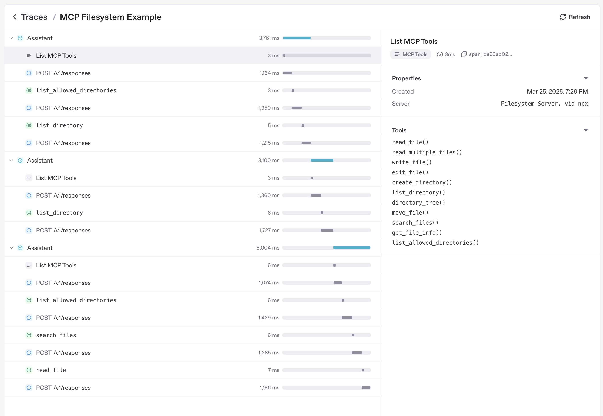

Model context protocol (MCP)
Model context protocol（別名 MCP）は、 LLM にツールとコンテキストを提供する方法です。MCP ドキュメントによると:
MCP は、アプリケーションが LLMs にコンテキストを提供する方法を標準化するオープンプロトコルです。MCP を AI アプリケーション向けの USB-C ポートのようなものと考えてください。USB-C がデバイスをさまざまな周辺機器やアクセサリに接続する標準化された方法を提供するのと同様に、MCP は AI モデルを異なるデータソースやツールに接続する標準化された方法を提供します。
Agents SDK は MCP をサポートしています。これにより、幅広い MCP サーバーを使用してエージェントにツールやプロンプトを提供できます。
MCP サーバー
現在、MCP 仕様では使用するトランスポートメカニズムに基づき、3 種類のサーバーが定義されています:
- stdio サーバー: アプリケーションのサブプロセスとして実行されます。ローカルで動作していると考えてください。
- HTTP over SSE サーバー: リモートで実行され、URL で接続します。
- Streamable HTTP サーバー: MCP 仕様で定義された Streamable HTTP トランスポートを用いてリモートで実行されます。
これらのサーバーへは MCPServerStdio、MCPServerSse、MCPServerStreamableHttp クラスを使って接続できます。
たとえば、公式 MCP ファイルシステムサーバー を利用する場合は次のようになります。
from agents.run_context import RunContextWrapper
async with MCPServerStdio(
params={
"command": "npx",
"args": ["-y", "@modelcontextprotocol/server-filesystem", samples_dir],
}
) as server:
# Note: In practice, you typically add the server to an Agent
# and let the framework handle tool listing automatically.
# Direct calls to list_tools() require run_context and agent parameters.
run_context = RunContextWrapper(context=None)
agent = Agent(name="test", instructions="test")
tools = await server.list_tools(run_context, agent)
MCP サーバーの利用
MCP サーバーはエージェントに追加できます。Agents SDK はエージェント実行時に毎回 MCP サーバーの list_tools() を呼び出し、 LLM に MCP サーバーのツールを認識させます。 LLM が MCP サーバーのツールを呼び出すと、SDK はサーバーの call_tool() を実行します。
agent=Agent(
name="Assistant",
instructions="Use the tools to achieve the task",
mcp_servers=[mcp_server_1, mcp_server_2]
)
ツールフィルタリング
MCP サーバーでツールフィルターを設定すると、エージェントが利用できるツールを制限できます。SDK は静的および動的フィルタリングの両方をサポートしています。
静的ツールフィルタリング
単純な許可 / ブロックリストには静的フィルタリングを使用できます:
from agents.mcp import create_static_tool_filter
# Only expose specific tools from this server
server = MCPServerStdio(
params={
"command": "npx",
"args": ["-y", "@modelcontextprotocol/server-filesystem", samples_dir],
},
tool_filter=create_static_tool_filter(
allowed_tool_names=["read_file", "write_file"]
)
)
# Exclude specific tools from this server
server = MCPServerStdio(
params={
"command": "npx",
"args": ["-y", "@modelcontextprotocol/server-filesystem", samples_dir],
},
tool_filter=create_static_tool_filter(
blocked_tool_names=["delete_file"]
)
)
allowed_tool_names と blocked_tool_names の両方が設定されている場合の処理順序:
1. まず allowed_tool_names（許可リスト）を適用し、指定したツールのみを残します
2. 次に blocked_tool_names（ブロックリスト）を適用し、残ったツールから指定したツールを除外します
たとえば allowed_tool_names=["read_file", "write_file", "delete_file"] と blocked_tool_names=["delete_file"] を設定すると、利用可能なのは read_file と write_file だけになります。
動的ツールフィルタリング
より複雑なロジックが必要な場合は、関数を使った動的フィルターを利用できます:
from agents.mcp import ToolFilterContext
# Simple synchronous filter
def custom_filter(context: ToolFilterContext, tool) -> bool:
"""Example of a custom tool filter."""
# Filter logic based on tool name patterns
return tool.name.startswith("allowed_prefix")
# Context-aware filter
def context_aware_filter(context: ToolFilterContext, tool) -> bool:
"""Filter tools based on context information."""
# Access agent information
agent_name = context.agent.name
# Access server information
server_name = context.server_name
# Implement your custom filtering logic here
return some_filtering_logic(agent_name, server_name, tool)
# Asynchronous filter
async def async_filter(context: ToolFilterContext, tool) -> bool:
"""Example of an asynchronous filter."""
# Perform async operations if needed
result = await some_async_check(context, tool)
return result
server = MCPServerStdio(
params={
"command": "npx",
"args": ["-y", "@modelcontextprotocol/server-filesystem", samples_dir],
},
tool_filter=custom_filter # or context_aware_filter or async_filter
)
ToolFilterContext では次の情報にアクセスできます:
- run_context: 現在の実行コンテキスト
- agent: ツールを要求しているエージェント
- server_name: MCP サーバー名
プロンプト
MCP サーバーは、agent instructions を動的に生成できるプロンプトも提供します。これにより、パラメーターでカスタマイズ可能な再利用可能な instruction テンプレートを作成できます。
プロンプトの利用
プロンプトをサポートする MCP サーバーは、次の 2 つの主要メソッドを提供します:
list_prompts(): サーバー上のすべてのプロンプトを一覧表示get_prompt(name, arguments): 任意のパラメーター付きで特定のプロンプトを取得
# List available prompts
prompts_result = await server.list_prompts()
for prompt in prompts_result.prompts:
print(f"Prompt: {prompt.name} - {prompt.description}")
# Get a specific prompt with parameters
prompt_result = await server.get_prompt(
"generate_code_review_instructions",
{"focus": "security vulnerabilities", "language": "python"}
)
instructions = prompt_result.messages[0].content.text
# Use the prompt-generated instructions with an Agent
agent = Agent(
name="Code Reviewer",
instructions=instructions, # Instructions from MCP prompt
mcp_servers=[server]
)
キャッシュ
エージェントが実行されるたびに、MCP サーバーの list_tools() が呼ばれます。サーバーがリモートの場合、これはレイテンシーの原因になります。ツール一覧を自動でキャッシュするには、MCPServerStdio、MCPServerSse、MCPServerStreamableHttp に cache_tools_list=True を渡します。ツール一覧が変更されないと確信できる場合のみ実行してください。
キャッシュを無効化したい場合は、サーバーの invalidate_tools_cache() を呼び出します。
End-to-end コード例
examples/mcp で完全な動作例をご覧いただけます。
トレーシング
Tracing を使用すると、MCP 操作が自動的に記録されます。対象は次のとおりです:
- MCP サーバーへのツール一覧要求
- 関数呼び出しに関する MCP 関連情報
